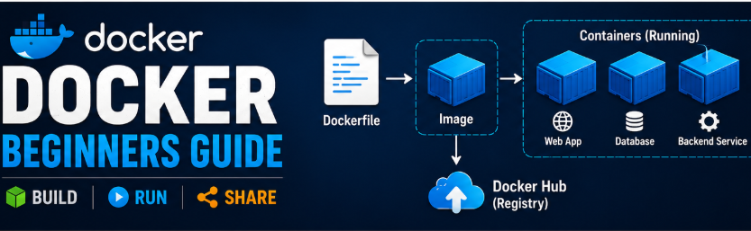
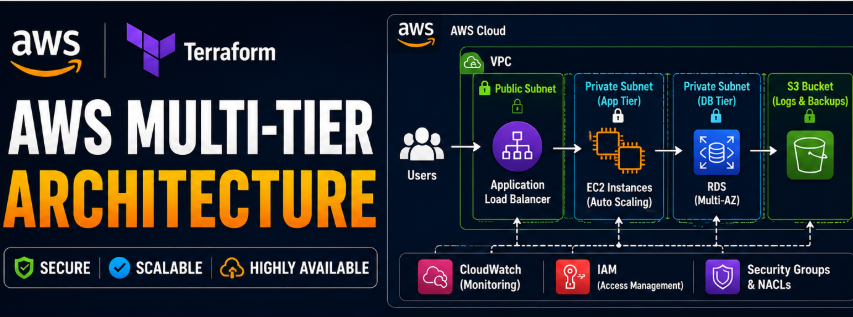
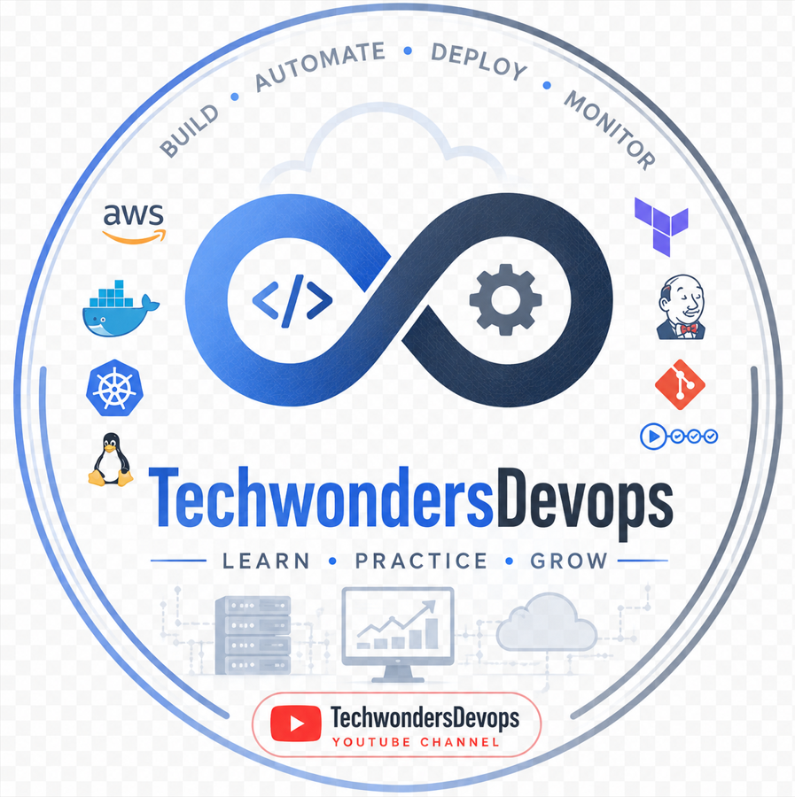
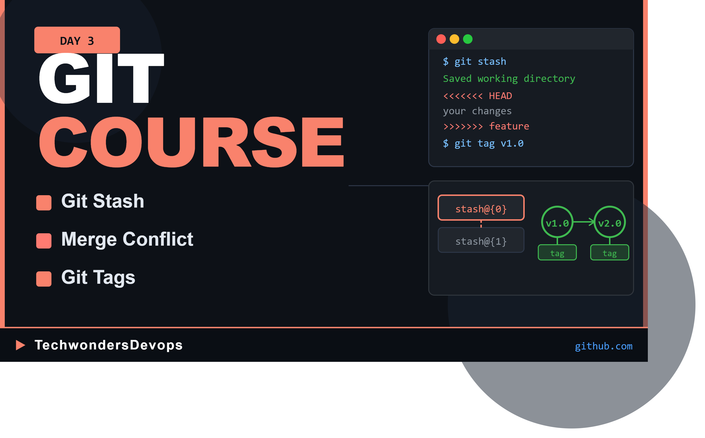

Senior DevOps & Site Reliability Engineer with 7+ years of experience designing cloud platforms, automating infrastructure, and building production-grade Kubernetes and CI/CD solutions for enterprise applications.
Years Experience
Projects Delivered
Cloud Platforms
Get to know me better
I am a Senior DevOps & Site Reliability Engineer with 7+ years of experience building secure, scalable, and highly available cloud platforms. I specialize in AWS, Kubernetes, Terraform, Docker, and CI/CD automation, helping organizations improve deployment speed, platform reliability, and operational efficiency. I enjoy solving complex infrastructure challenges and enabling development teams to deliver software confidently and at scale.
7+ Years
Senior Site Reliability Engineer
India
Open Worldwide
Technologies and tools I work with
My career journey in DevOps & Site Reliability Engineering
Bengaluru, India
Client: Alaska Airlines
Bengaluru, India
Client: Lloyds Bank
Bengaluru, India
Client: CommonWealth Bank
Bengaluru, India
Bengaluru, India
Bengaluru, India
Hands-on DevOps Projects & Learning Resources

Complete Docker learning repository covering installation, images, containers, Dockerfile, volumes, networking, Docker Compose and real-world examples.

Designed and automated the deployment of a production-ready AWS multi-tier infrastructure using Terraform.
Sharing practical DevOps knowledge through YouTube
I create beginner-friendly DevOps tutorials covering Docker, Kubernetes, Terraform, AWS, Linux, Git, CI/CD and real-world infrastructure projects.

Learn DevOps from scratch with hands-on projects and real-world examples. Covers Docker, Kubernetes, Terraform, AWS, Linux, Git, CI/CD and more.
Watch Video
Open to international DevOps & SRE opportunities, consulting and professional collaboration.
Whether you're hiring a Senior DevOps Engineer, looking for an SRE, or seeking DevOps training, I'd be happy to connect.